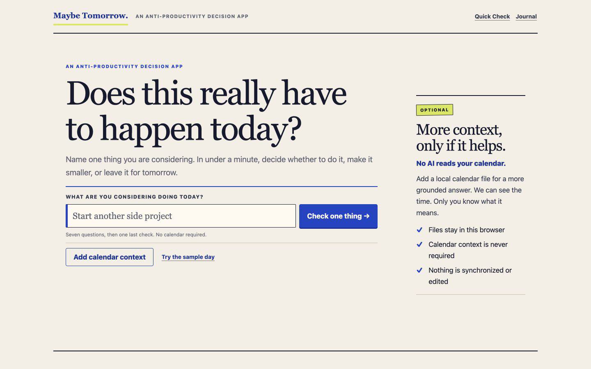
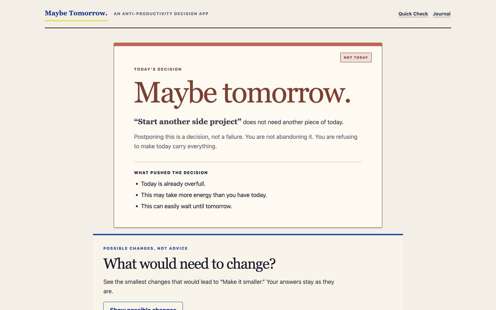
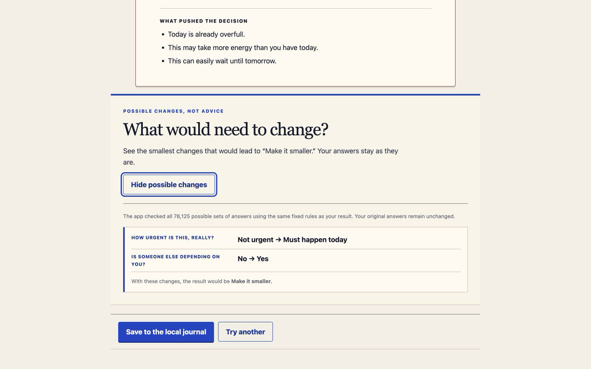
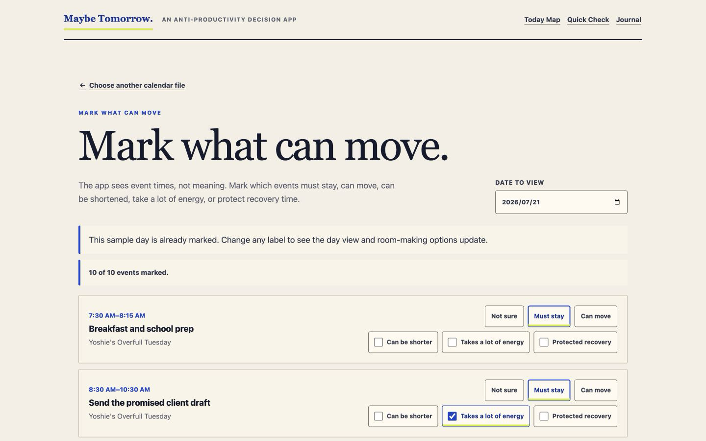
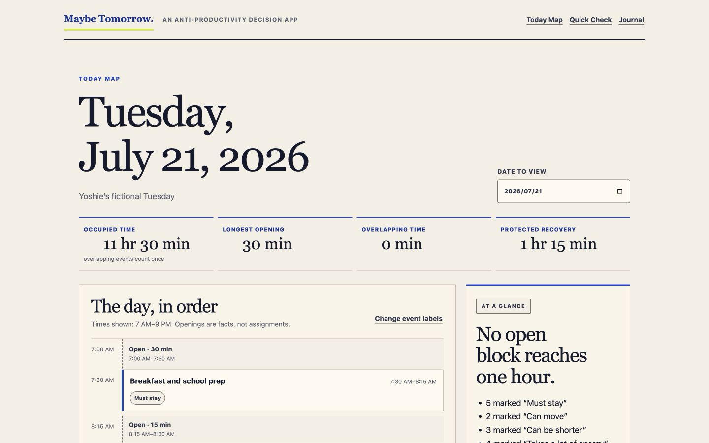
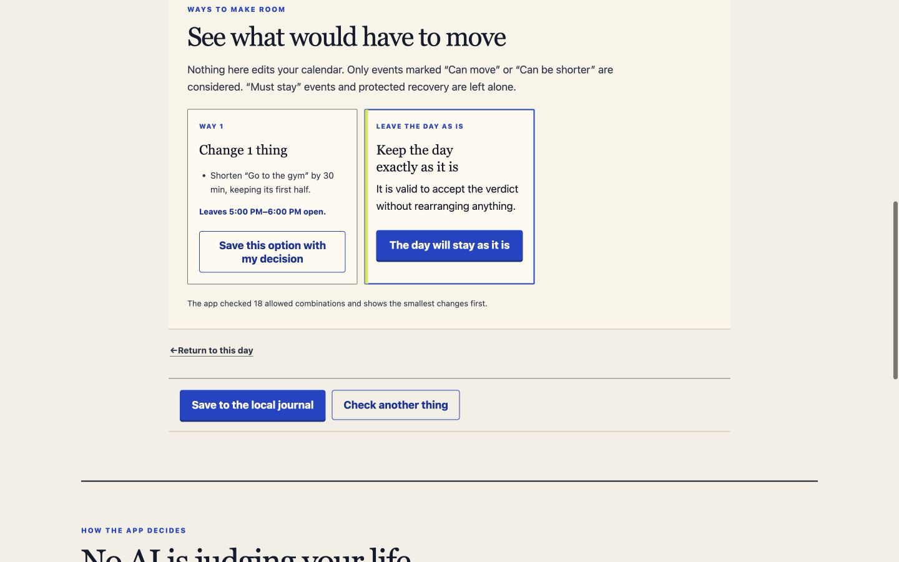
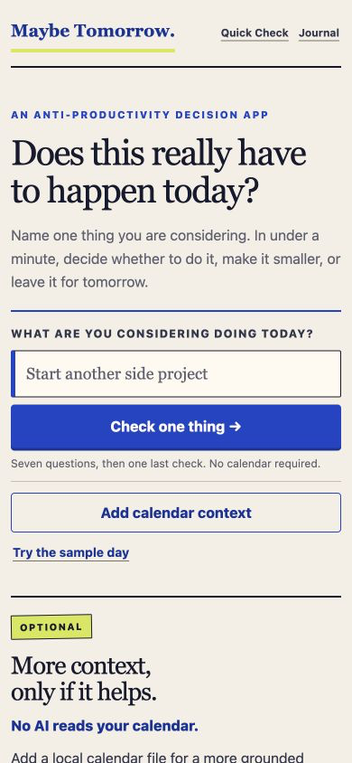
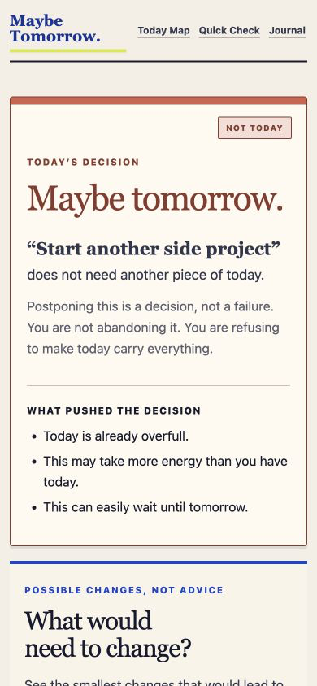
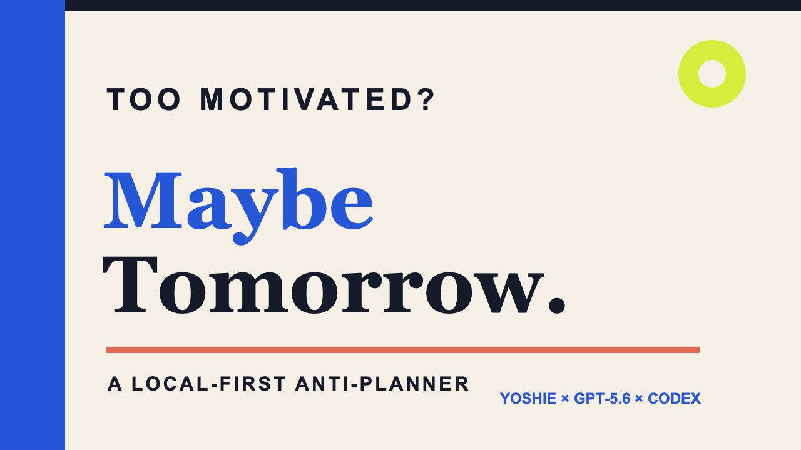
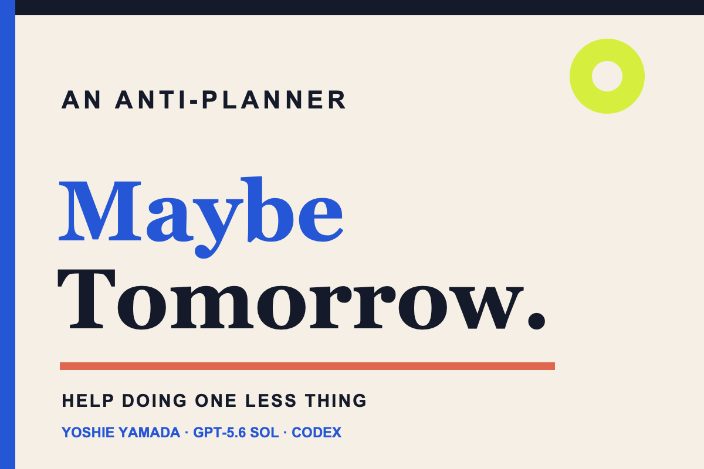

-

01 The product begins with one thing.
No calendar is required. Optional context stays visibly secondary.
-

02 A deterministic brake.
The verdict explains the explicit facts that pushed the decision.
-

03 Cost of Yes, without generated persuasion.
The app checks all 78,125 answer combinations and preserves the original answers.
-

04 Only the human assigns meaning.
The fictional day is pre-marked for a reproducible demo; titles are never interpreted by AI.
-

05 The day becomes observable, not graded.
Four factual metrics and a chronological text agenda expose the available time structure.
-

06 One honest trade-off.
Shortening the fictional gym by 30 minutes creates one hour, after 18 allowed combinations are checked.
-

07 The same hierarchy at mobile width.
The capture is 390 × 844 with no horizontal overflow.
-

08 The decision stays legible.
Verdict, explanation, factors, and next action remain available without sideways scrolling.

YouTube 16:9
